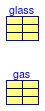

Data for BESTEST models
Extends from Modelica.Icons.MaterialPropertiesPackage (Icon for package containing property classes).
| Name | Description |
|---|---|
| High Mass Case: Exterior Wall | |
| High Mass Case: Floor | |
| Thermal properties of window glass | |
| Double pane, clear glass 3.175mm, air 13mm, clear glass 3.175mm | |
| ASHRAE Standard Results | |
| ASHRAE Standard Results | |
| Record that is used for summary of the results |
 Buildings.Rooms.Examples.BESTEST.Data.ExteriorWallCase900
Buildings.Rooms.Examples.BESTEST.Data.ExteriorWallCase900
High Mass Case: Exterior Wall

| Type | Name | Default | Description |
|---|---|---|---|
| Integer | nLay | 3 | Number of layers |
| Material | material[nLay] | {Buildings.HeatTransfer.Data... | Layer by layer declaration of material, starting from outside to room-side |
| Emissivity | absIR_a | 0.9 | Infrared absorptivity of surface a (usually outside-facing surface) [1] |
| Emissivity | absIR_b | 0.9 | Infrared absorptivity of surface b (usually room-facing surface) [1] |
| Emissivity | absSol_a | 0.6 | Solar absorptivity of surface a (usually outside-facing surface) [1] |
| Emissivity | absSol_b | 0.6 | Solar absorptivity of surface b (usually room-facing surface) [1] |
| SurfaceRoughness | roughness_a | Buildings.HeatTransfer.Types... | Exterior surface roughness |
Buildings.Rooms.Examples.BESTEST.Data.FloorCase900
High Mass Case: Floor
| Type | Name | Default | Description |
|---|---|---|---|
| Integer | nLay | 2 | Number of layers |
| Material | material[nLay] | {Buildings.HeatTransfer.Data... | Layer by layer declaration of material, starting from outside to room-side |
| Emissivity | absIR_a | 0.9 | Infrared absorptivity of surface a (usually outside-facing surface) [1] |
| Emissivity | absIR_b | 0.9 | Infrared absorptivity of surface b (usually room-facing surface) [1] |
| Emissivity | absSol_a | 0.6 | Solar absorptivity of surface a (usually outside-facing surface) [1] |
| Emissivity | absSol_b | 0.6 | Solar absorptivity of surface b (usually room-facing surface) [1] |
| SurfaceRoughness | roughness_a | Buildings.HeatTransfer.Types... | Exterior surface roughness |
 Buildings.Rooms.Examples.BESTEST.Data.Glass600
Buildings.Rooms.Examples.BESTEST.Data.Glass600Thermal properties of window glass
This record declares the glass properties for the BESTEST model.
Extends from Modelica.Icons.Record (Icon for records).
| Type | Name | Default | Description |
|---|---|---|---|
| Length | x | 0.003175 | Thickness [m] |
| ThermalConductivity | k | 1.06 | Thermal conductivity [W/(m.K)] |
| TransmissionCoefficient | tauSol | 0.86156 | Solar transimittance. It is tauSol in WINDOW5. [1] |
| ReflectionCoefficient | rhoSol_a | 0.0434 | Solar reflectance of surface a (usually outside-facing surface). It is Rsol1 in WINDOW5. [1] |
| ReflectionCoefficient | rhoSol_b | 0.0434 | Solar reflectance of surface b (usually room-facing surface). It is Rsol2 in WINDOW5. [1] |
| TransmissionCoefficient | tauIR | 0 | Infrared infrared transmissivity of glass. It is Tir in WINDOW5. [1] |
| Emissivity | absIR_a | 0.9 | Infrared infrared absorptivity of surface a (usually outside-facing surface). It is Emis1 in WINDOW5. [1] |
| Emissivity | absIR_b | 0.9 | Infrared infrared absorptivity of surface b (usually room-facing surface). It is Emis2 in WINDOW5. [1] |
Buildings.Rooms.Examples.BESTEST.Data.Win600
Double pane, clear glass 3.175mm, air 13mm, clear glass 3.175mm

This record declares the parameters for the window system for the BESTEST.
Extends from Buildings.HeatTransfer.Data.GlazingSystems.Generic (Thermal properties of glazing systems).
| Type | Name | Default | Description |
|---|---|---|---|
| Integer | nLay | 2 | Number of glass layers |
| Boolean | haveExteriorShade | false | Set to true if window has an exterior shade (at surface a) |
| Boolean | haveInteriorShade | false | Set to true if window has an interior shade (at surface b) |
| Generic | glass[nLay] | {Buildings.Rooms.Examples.BE... | Layer by layer declaration of glass layers, starting from outside to room-side |
| Generic | gas[nLay - 1] | {Buildings.HeatTransfer.Data... | Layer by layer declaration of glass layers, starting from outside to room-side |
| Generic | shade | Shade | |
| CoefficientOfHeatTransfer | UFra | 1.4 | U-value of frame [W/(m2.K)] |
| Emissivity | absIRFra | 0.8 | Infrared absorptivity of window frame [1] |
| Emissivity | absSolFra | 0.5 | Solar absorptivity of window frame [1] |
Buildings.Rooms.Examples.BESTEST.Data.StandardResultsASHRAE Standard Results
For cases with heating and cooling, this record is used to compare the simulated results with the results published in the ASHRAE/ANSI Standard 140.
Extends from Modelica.Icons.Record (Icon for records).
| Type | Name | Default | Description |
|---|---|---|---|
| ResultSummary | annualHea | Annual heating energy | |
| ResultSummary | annualCoo | Annual heating energy | |
| ResultSummary | peakHea | Peak heating power | |
| ResultSummary | peakCoo | Peak heating power |
Buildings.Rooms.Examples.BESTEST.Data.StandardResultsFreeFloatingASHRAE Standard Results
For free-floating temperature cases, this record is used to compare the simulated results with the results published in the ASHRAE/ANSI Standard 140.
Extends from Modelica.Icons.Record (Icon for records).
| Type | Name | Default | Description |
|---|---|---|---|
| ResultSummary | minT | Minimum temperature | |
| ResultSummary | maxT | Maximum temperature | |
| ResultSummary | meanT | Mean temperature |
Record that is used for summary of the results
Record that is used for reference results.
| Type | Name | Default | Description |
|---|---|---|---|
| Real | Min | Minimum | |
| Real | Max | Maximum | |
| Real | Mean | Mean |